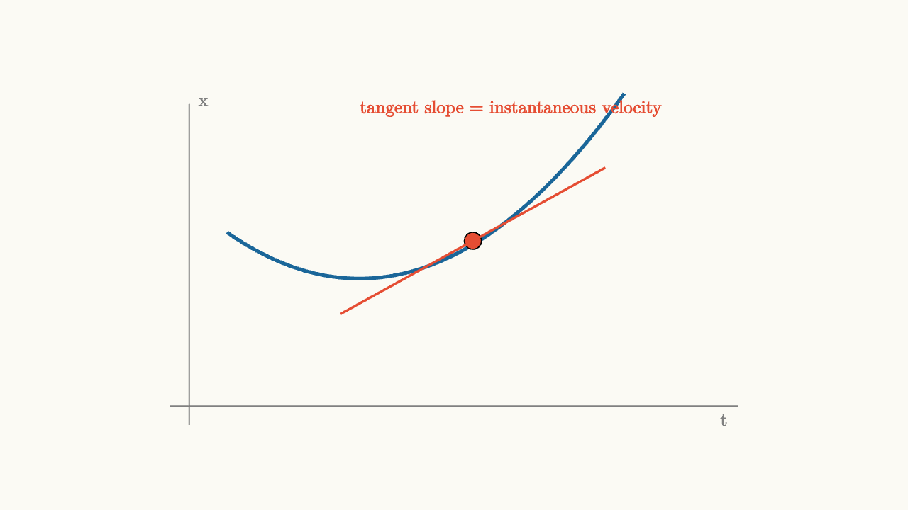
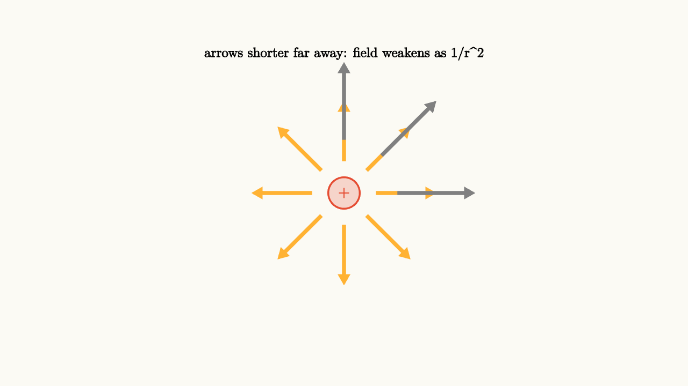
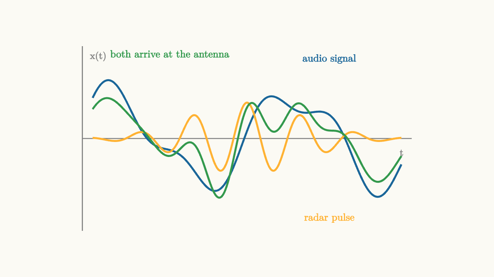
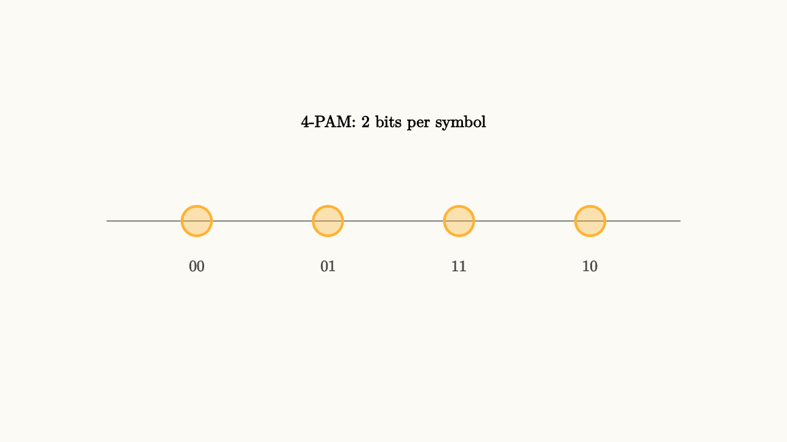
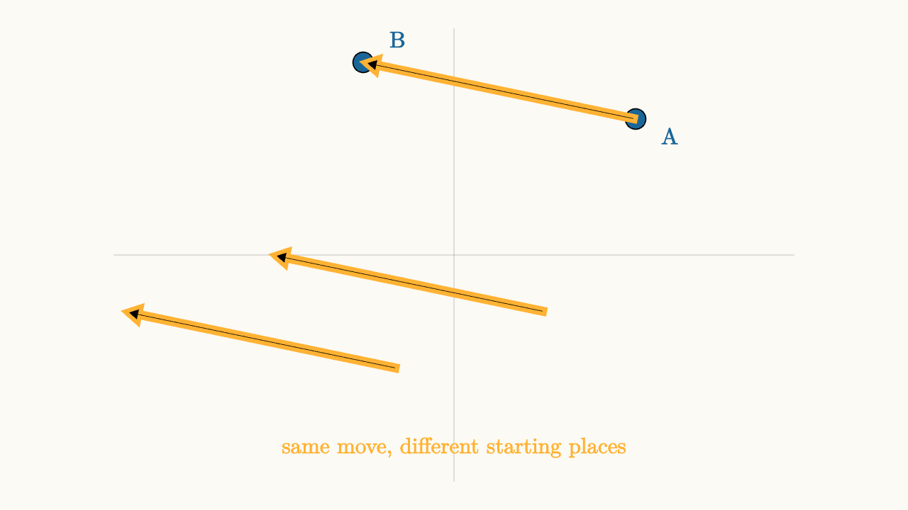
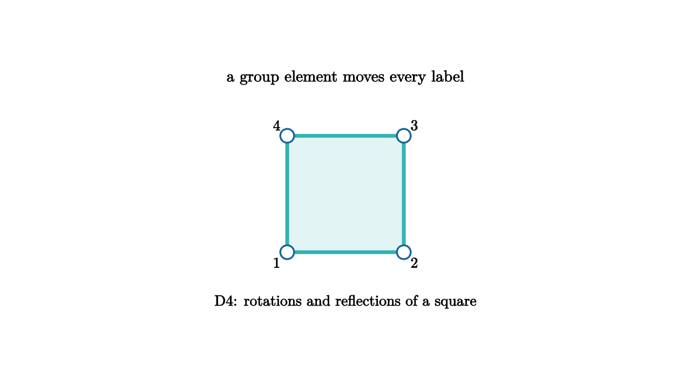
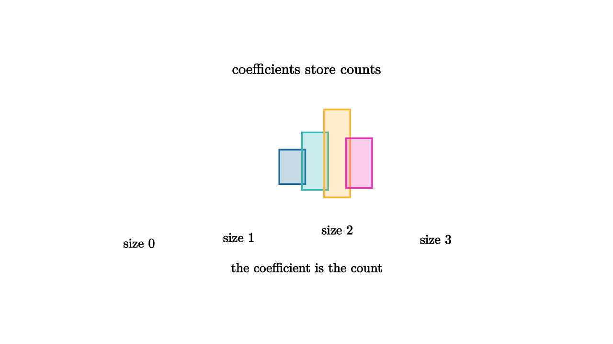
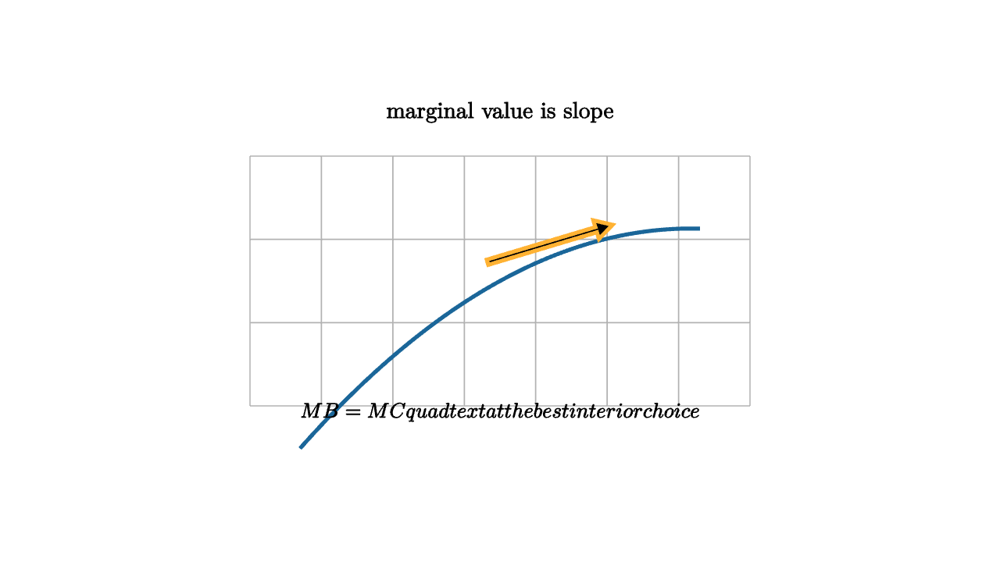
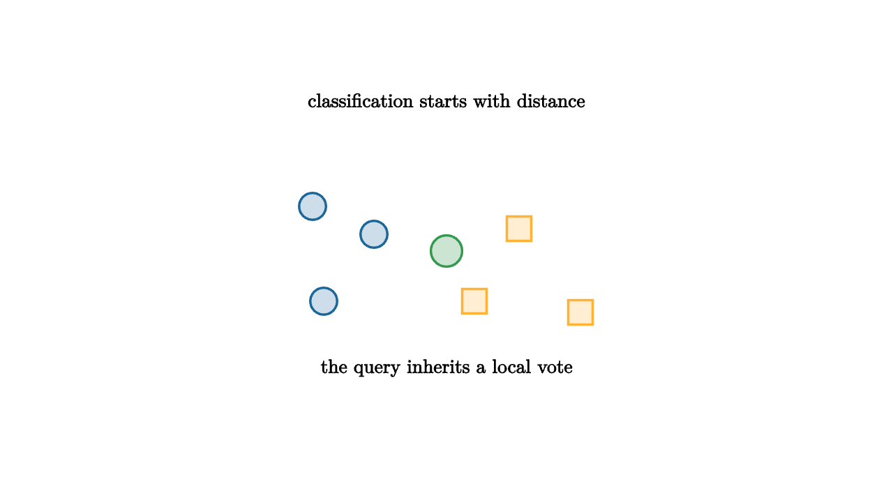
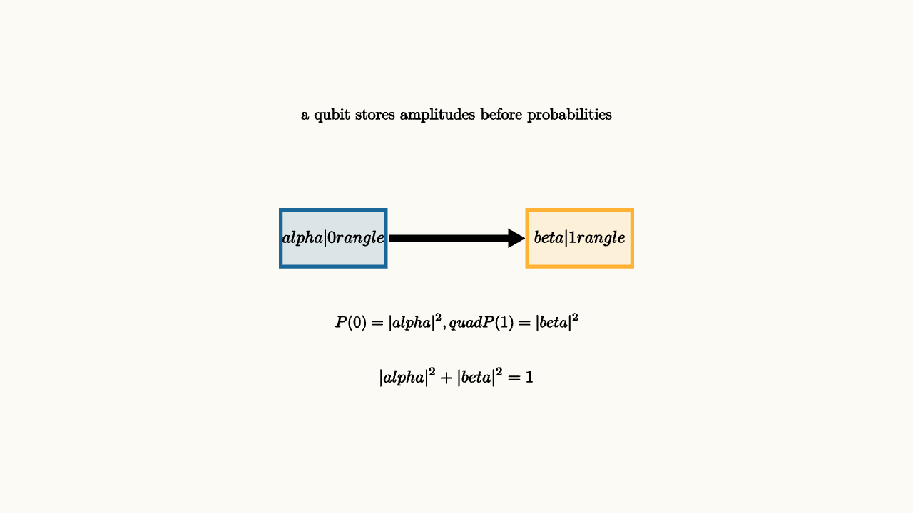

Mathematical and related writings created with the Monocurl web runtime.
These essays are a work-in-progress testing bed for Monocurl, not polished educational content yet.


Physics Electricity and Magnetism
- Electric Fields Turn Charge Into Geometry
- Gauss Law Counts Field Lines
- Voltage Is Energy Per Charge
- Magnetic Fields Guide Moving Charge
- Current Is Charge Flow With A Speed Limit
- Capacitors Store Field Energy
- RC Circuits Turn Time Into An Exponential
- Induction Makes Changing Fields Push Charge
- Maxwell Equations Make Light Possible
- Energy Flows Through Fields

Linear Systems for Circuits
- Circuits Speak In Signals
- Impulse Response Is A Circuit Fingerprint
- Convolution Adds Delayed Echoes
- Laplace Turns Circuit Laws Into Algebra
- Complex Exponentials Are LTI Eigenfunctions
- Frequency Response Draws A Circuit Personality
- Filters Shape What A Signal Can Keep
- Sampling Turns Time Into A Sequence
- State Space Keeps Circuit Memory
- Feedback Makes Systems Behave

Digital Communications Theory
- Digital Links Begin With Symbols
- PAM Needs Pulse Shaping
- Carrier Frequency Moves The Signal
- Receivers Must Find Time Phase And Users
- Matched Filters Spend Noise Carefully
- Raised Cosine Pulses Control Neighbors
- Symbol Timing Finds The Eye Center
- Carrier Sync Turns A Spinning Cloud
- Frame Sync Finds The Start Of A Message
- Multiple Users Share Dimensions

Visual Algebra and Trigonometry
- Equations Are Balanced Moves
- Factoring Is Area With a Memory
- Trig Begins With Rotating Coordinates
- Equation Steps Can Create Fakes
- Logarithms Turn Multiplication Into Distance
- Rational Functions Have Visible Danger Zones
- Identities Are Coordinate Changes
- Inverses Undo With Domain Care
- Complex Numbers Make Rotation Algebraic
- Polynomials Remember Their Roots

Linear Algebra as Motion
- Vectors Are Moves Before They Are Points
- Matrices Move the Whole Plane
- Area Tells How a Motion Scales Space
- Change of Basis Is a Moving Frame
- Eigenvectors Are Lines That Keep Their Name
- Orthogonality Is Independent Information
- Projections Choose the Closest Shadow
- Determinants Track Oriented Volume
- Least Squares Finds the Best Compromise
- Diagonalization Turns Repetition Into Scaling

Multivariable Calculus
- Partial Derivatives Are Slices
- The Gradient Points Uphill
- Tangent Planes Are Local Maps
- Double Integrals Stack Tiny Columns
- Line Integrals Add Along A Path
- Divergence Measures Source Strength
- Curl Measures Local Spin
- Green Theorem Turns Boundaries Into Area
- Jacobians Are Local Volume Exchange Rates
- Constrained Optimization Uses Touching Contours





Computational Geometry and Graphics
- Orientation Is The First Graphics Predicate
- Convex Hulls Wrap The Visible Extreme
- Curves Become Surfaces By Sampling
- Triangulation Turns Shapes Into Computation
- Barycentric Coordinates Blend Inside Triangles
- Bezier Curves Are Controlled Motion
- Ray Tracing Follows Light Backward
- Transform Pipelines Move Worlds To Screens
- Z-Buffers Remember The Nearest Surface
- Shaders Turn Geometry Into Materials

Mathematical Data Science
- Projection Turns Data Into A Question
- SVD Splits A Matrix Into Signal Channels
- PCA Chooses Coordinates For Variation
- Low Rank Structure Compresses Patterns
- Clustering Draws Prototypes In Data
- Graphs Turn Data Into Neighborhoods
- Markov Chains Rank By Flow
- Fourier Features Find Hidden Periods
- Random Projections Preserve Large Geometry
- Anomaly Detection Looks For Broken Patterns

Applied Probability in Daily Life
- Waiting Time Has A Shape
- Risk Is Frequency Times Consequence
- Bayes Updates Ordinary Belief
- Expected Value Prices Uncertain Choices
- Variance Measures How Surprises Spread
- Independence Is A Structural Assumption
- Markov Models Track Memory-Light Systems
- Queueing Explains Lines And Latency
- Monte Carlo Turns Randomness Into Estimates
- Correlations Warn Without Proving Cause

Math in Economics
- Marginal Thinking Explains The Next Unit
- Equilibrium Is A Meeting Of Plans
- Discounting Prices Time
- Elasticity Measures Responsiveness
- Game Theory Studies Stable Expectations
- Auctions Turn Values Into Rules
- Risk Aversion Bends Utility
- Externalities Put Missing Prices On The Map
- Network Effects Make Value Social
- Growth Models Balance Saving And Decay

Machine Learning From Geometry
- Nearest Neighbors Draw Boundaries
- Linear Models Are Moving Hyperplanes
- Gradients Point Toward Better Parameters
- Loss Landscapes Tell Optimization Stories
- Regularization Prefers Simple Explanations
- Kernels Make Dot Products Flexible
- Trees Partition Space With Questions
- Neural Networks Compose Bends
- Gradient Descent Follows Local Slope
- Generalization Is Geometry Plus Data

Quantum Physics to Quantum Computing
- Amplitudes Are Vectors Before They Are Probabilities
- Quantum Gates Rotate State Space
- Entanglement Makes The State Space Joint
- Measurement Chooses A Basis
- Interference Makes Amplitudes Compute
- Bloch Sphere Turns Qubits Into Geometry
- Tensor Products Build Many-Qubit Worlds
- Decoherence Leaks Phase To The Room
- Quantum Fourier Transform Finds Periods
- Error Correction Protects Information